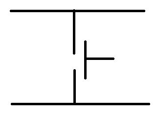
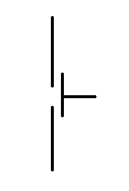
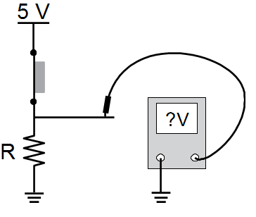
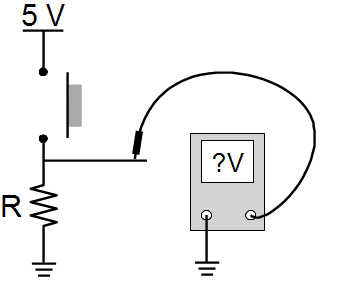
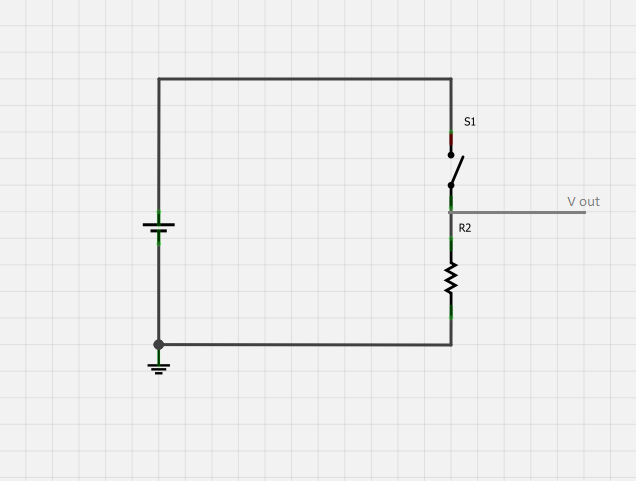
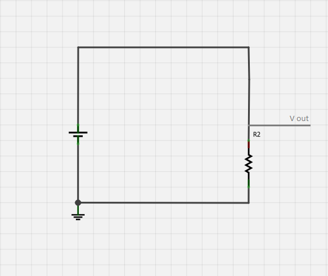
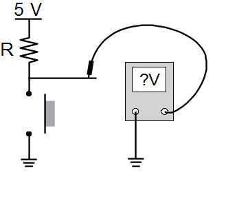
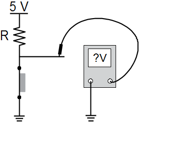

Fig. 2.
LED configuration. |
-
Place the three LEDs in the breadboard as shown in Figure 2, keeping
track of which of the two "legs" is the anode and which is the cathode
(the anode is the longer leg).
-
Using three wires, connect the anode
of one LED to pin 8, the anode of another to pin 11, and another to pin
12.
-
Now connect the chipKIT GND pin (there may be multiple GND pins,
so just use the one closest to the 5V pin) to a bus strip at the bottom of the breadboard.
-
From the perspective of Figure 2, the bus strips are the horizontal rows on a breadboard that are all electrically connected.
They are usually separated from the main section of the board and are sometimes marked in red and blue.
-
Bus strips are normally used to connect voltage supplies and grounds to the breadboard, because they provide easy access from other points on the breadboard.
-
For the rest of this project, the bus strips connect to the GND pin will be referred to as the ground bus strip.
-
Now, attach one 330-ohm resistor to the cathode of
each of the LEDs. The other ends of these resistors should all be placed so that they connect to the ground bus strip. This can be done by placing the lead directly into the bus strip,
or by using a small wire to connect from a column in the main section of the breadboard to the ground bus strip (as in Figure 2).
When there is a single path for charge to flow
through two components,
(when any charge that flows through one component must also flow
through the other) then we say the components are in series.
Each of the three LEDs in this circuit has a resistor in series with
it. Series resistors
are used to limit the current that passes through
their particular branches of the circuit. LEDs are non-linear devices
and can potentially pass large amounts of current when they exceed
their threshold voltage by small amounts. The series resistor keeps
the current at a safe level. This helps to protect the LEDs
and
chipKIT board from the potential damage of drawing too much
current.
Connecting
external LEDs and series resistors are discussed more in
depth in Project 3: Blink External LED.
|
|
Step 2: Setting up the Buttons
|
Theory: Buttons, Pull-Down Resistors, and Pull-Up Resistors
|
|
Before connecting the buttons to the circuit, it is appropriate to
consider a bit of circuit theory so that we understand how
buttons can be used to produce a signal that is readable by the
chipKIT (digital) I/O pins.
|
|
Buttons:
|
Fig. 3.
Four-port button. |

Fig. 4. Four-port button
schematic symbol.
|
If you were
to examine the buttons used for this project, you would see that there
are four distinct legs or “terminals” on the device (see
Figure 3). For this type of button, the terminals are grouped in
pairs with the top two terminals of the devices being
electrically connected to each other and the bottom two being
connected to each other (Figure 4). For the purpose of our analysis,
the pair of terminals can be thought of as just a single connection as
in Figure 5.
So, now when the button is pressed, a small piece of conductive material
makes a physical connection between the top and bottom
terminals. This connection is what allows current to flow
between the terminals of the device.
|

Fig. 5. Two-port button
schematic symbol.
|
|
Theory:
|

Fig. 6. Basic
button circuit with pull-down resistor pressed. |
|
Figure 6 shows a
simple example of a button
circuit. The circuit is constructed by using a wire to
connect the top port of
the button to a 5V voltage supply and the bottom port of the button to
a resistor. The other end of the resistor is then connected to the
circuit's ground.
Within chipKIT, the 5V voltage supply is synonymous with the 5V
pin, and ground corresponds to the GND pin.
When
the button is pressed, the physical connection between two ports is in
place. If one was to use a multimeter to measure the voltage
between the point above the resistor and ground,
they would see approximately 5 volts.
|

Fig. 7. Basic
button circuit with pull-down resistor, not pressed |
|
When the button is
not pressed, the
physical connection between the ports of the button is no longer present.
This is now considered to have an "open" condition. An
open
occurs when there is no flow of current
between two points in the circuit (at a location that should normally
allow it). Since the physical path between the button ports is no
longer there, current
can’t flow between them. Measuring again at
the same point, the multimeter would now read approximately 0
volts.
A resistor placed as shown above in Figure 7 would be considered to be a pull-down resistor.
Without it pressing the button would "short" the power
source. A circuit is considered to have a short
condition when a new path in the circuit is introduced with little to no resistance.
Since there is little, if any, opposition to
the flow of current in this new path, it will allow a good amount (if
not all) of current to pass through it. Shorting in a
circuit can potentially cause damage to
components and cause incorrect circuit operation.
|

Fig. 7a.
Non pressed button circuit diagram |

Fig. 7b.
Pressed button circuit diagram |
|
|
Another way of thinking about
this is to examine the circuit
diagrams of Figs. 7a and 7b. In
7a,
it is easy to see that when the button is not pressed, the loop formed
going clockwise from the
voltage source through the resistor is not connected. Thus, it is an
incomplete
circuit (no current is flowing through the loop). Since
the open occurs before the point we are
measuring, there is no voltage difference between that point and
ground, and
it should measure 0 v.
In Figure 7b, you can see that
the loop is now completed when the button ins pressed. In
this
simple circuit the resistor and voltage sources are the only components
in the
circuit. For simplicity's sake,
we consider the button to be an ideal component and there for offers no
opposition to current flow when it is pressed. The concept of “ideal” is used
during circuit analysis to denote that a component works exactly like its circuit model predicts.
Using a button example to illustrate this, the circuit model of a button is what one might expect,
a device that when pressed completes a circuit, and then while pressed acts much like a wire.
In reality nothing can act perfectly, components may have slight variances from there “ideal” model,
although these variances are often incredibly small. A button for instance offers a very small amount
of resistance to the flow of current (and in fact even wires themselves do as well),
but it such a negligible amount that often enough it can be ignored to simplify the circuit for analysis purposes.
(As we have done in this case.)
Kirchhoff’s
voltage law
(KVL) states that the sum of all voltages
(both supplied voltages and voltage drops) around a closed loop in a circuit must be
equal to
zero. A voltage
drop is defined as the
voltage difference before and after a single component. So for Figure 7b, if the
voltage source supplies
5V, the voltage drop across the resistor must also equal 5V.
More
information about
analyzing circuits using Kirchhoff’s
voltage law is contained in this project's appendix.
|
The button circuit could be alternatively configured
by connecting one end of the resistor to the power supply pin and the
other to the top button terminal. The bottom terminal
is then connected to ground.
|

Fig. 8. Alternative button
configuration, not pressed.
|
|
When the button is not pressed, an open
is formed between the resistor and ground. While the
button is in an
open condition, current no longer flows from one end of the resistor to
the
other. Because of this, it follows that there will no longer be a
voltage drop
across the resistor. The
points before and
after the resistor are essentially at the same voltage level. Since one
end of
the resistor is connected to the 5V supply, the point after the
resistor will
measure the same 5 volts with respect to ground.
|

Fig. 9.
Alternative button configuration, pressed. |
Now when the button is pressed, a
complete circuit is formed from the voltage supply through the
resistor and to ground. Since the voltage drop is almost entirely
across the resistor, measuring at a point after the resistor will
measure 0 volts. This configuration of resistor would be considered a pull-up resistor.
It is also important to note that with this particular configuration,
logic is inverted. (An pressed button is represented by 0 volts, where
a non-pressed button is represented by 5 volts). This is the opposite
of the pull-down resistor button circuit.
|
|
Button
Setup
|

Fig. 10. Button
configuration.
|
- Connect the chipKIT 5V pin to a bus strip close to the ground bus strip (this was set up in step 1).
Note that in Figure 10 the LEDs are not shown for simplicity.
- Place buttons A , B, and C, onto the
breadboard as seen in Figure 10. Most breadboards have uniform gaps between
columns in the main secton of the board (with the board placed as in Figure 10). The
buttons used in this project are large enough to span these gaps and it
is recommended to place the buttons (with the top of the button oriented to point right, similar to Figure 10), so that the left and right terminals
connect the columns on either side of the gap. While this isn’t
absolutely necessary, it will provide you more room to work.
- Using three wires, connect the top
terminal of each button to the 5V bus strip.
- Using three more wires, connect from the
chipKIT digital I/O pins 5, 6 and 7 to the bottom terminal of buttons A,
B, and C.
- For each button, connect one end of a 10k-ohm
resistor to the bottom terminal of the button.
- Connect the other end of each resistor to the
ground bus strip (you can use a wire to connect
from the resistor to bus strip, as shown in Figure 10, or you can simply
connect the end of the resistor to the bus strip directly).
- When each button is pressed, it will supply 5 volts to the digital I/O
pin. The chipKIT Max32 and Uno32 boards are designed to recognize a range from
2.4V minimum to 5.5V maximum as a HIGH input for digital I/O pins.
(ie when the software function digitalRead() is called, it will return a HIGH if the voltage
on the pin being read from is within this range). The digitalRead() function will
be discussed later in this project. (It is important to note that the analog inputs for the Max32,
and Uno32 can only accept a max of 3.3V).
|
The
overall circuit should appear as
follows:
|

Fig. 11: Overall
Circuit
|
Figure 11 illustrates the overall setup of the circuit, including both buttons and LEDs.
|
Theory: The "IF"
and
comparison statements:
In order to better understand what the chipKIT
is doing in conjunction with MPIDE, it is important to
provide a brief explanation of the if conditional statements and
digitalRead functions before running the sketch .
The digitalRead command operates much as
one would surmise. When called, the user specifies a pin
number
in the parameters, and the function will then read the electrical state
of the pin, and output either a HIGH or LOW constant accordingly.
For example:
Val = digitalRead(8);
Val would store the result of the digitalRead function called for pin
8. If pin 8 sees a high voltage level on the pin at the time
the function
is called, Val would equal HIGH, and if not Val would equal LOW.
Along with supporting all of the original Arduino syntax, chipKIT
sketches are based on C++ syntax and thus most conventions apply.
An “if” comparison statement syntax would be as follows:
|
if ( comparison expression){
... task......
}
else{
...do something else ...
}
|
|
Within the “if” statement you can see that there is a comparison expression.
A comparison expression is much like a mathematical equation except that it evaluates only to true or false.
Like mathematical expressions, which have their own set of operators (ie “ + , -, / and *) , comparison expressions
have their own set as well. For example a relational operators could be, “ ==” or “!=” , which have the meaning of
“ equal to” and “ not equal to” respectively. Comparison expressions are formed much like math equations using these operators.
An example of a comparison expression assuming x is an int type variable, could be:
-
x == 0
-
x != 0
In expression 1, this would evaluate to true whenever the variable x would equal 0, and false for any other value.
Expression 2 would then evaluate as false if x was equal 0, and true for any other value. There are many more operators than
just “equal” and “not equal”. The following table shows a few of these relational operators.
|
|
|
| Equal |
== |
| Not Equal |
!= |
| Greater than |
> |
| Less than |
< |
| Greater than or equal |
>= |
| Less than or equal |
<= |
Logical AND:
this operator is used to combined multiple comparison expressions into one expression.
(ie if expression A is true and expression B is true then the overall expression is also true.) |
&& |
Logical OR:
Like logical “AND”, this operator is used to combined multiple expressions.
An example would be, if expression A is true or expression B is true then the overall expression is true. |
|| |
|
An example of an "if" statement used in the project code:
|
|
if (digitalRead(BtnA) == HIGH) {
digitalWrite(LedA,HIGH);
}
else {
digitalWrite(LedA,LOW);
}
|
|
Once the if statement is executed, the digitalRead
function will
execute and then return a value. That returned value is then compared
to the constant value HIGH.
Stated more plainly, the syntax reads,
"If Button A is pressed, turn on LedA, else turn off LedA."
Multiple statements
can be used along
with the logical "And",
and logical "Or"
statements
for example:
|
if ((digitalRead(BtnA) == true) && (digitalRead(BtnB) == true)){
digitalWrite(LedC, LOW);
}
|
We could also say this more simply:
" If the Read value of ButtonA and ButtonB are true,
digitalWrite LedC to HIGH"
For an explanation of
functions,
Project 2 provides an overview of syntax and program
structure.
|
Software Set up:
|
The following is
the source code for this
project and an explanation is provided in comments
/*
**************************************************************
The first step will be setting up constants to associate names with the
various digital I/O ports used for this project.
each pin on chipKIT boards are referenced by an integer number
for functions calls. Assigning a constant name
allows you to use that name in the read and write function.
*/
const int ledA = 12;
const int ledB = 11;
const int ledC = 8;
const int btnA = 7;
const int btnB = 6;
const int btnC = 5;
void setup() {
/*
Each digital I/O port needs to be set up before use, to designate
it as ether an input or output port
Ports used for LED are set to OUTPUT
*/
pinMode(ledA, OUTPUT);
pinMode(ledB, OUTPUT);
pinMode(ledC, OUTPUT);
// Ports used for Buttons are set to INPUT
pinMode(btnA, INPUT);
pinMode(btnB, INPUT);
pinMode(btnC, INPUT);
}
void loop()
{
/* Start of the button scanning
This sketch will read the value of each digital input pin associated with the push
buttons, and then determine through "if" statements whether to turn on the digital
output port associated with the LEDs.
the digitalRead function will output a HIGH constant if voltage is detected at that
particular pin else the function will return LOW. High and LOW are predefined constants
which are associated with integer values
High is equal to the integer value 1 (0x01)
Low is equal to the integer value 0 (0x00)
***********************************************************
if the digitalRead function returns value HIGH then the corresponding LED is set to
output High, if not then the LED is set to output LOW.
*/
if ( digitalRead(btnA) == HIGH ){
digitalWrite(ledA, HIGH);
}
else {
digitalWrite(ledA, LOW);
}
// Read and Compare Button B
if ( digitalRead(btnB) == HIGH ) {
digitalWrite(ledB, HIGH);
}
else {
digitalWrite(ledB, LOW);
}
// Read and Compare Button C
if ( digitalRead(btnC) == HIGH ) {
digitalWrite(ledC, HIGH);
}
else {
digitalWrite(ledC, LOW);
}
}
// end program
|
Implementation and
Summary
Once the sketch is
uploaded to the chipKIT board, the circuit will be fully functional.
The circuit can be easily tested by pressing button A
to turn on LED A, button B to turn on LED B, and button C to LED C.
In summary, the following new concepts and software
functions were introduced:
| Core Concepts: |
| Button
operations |
| "If" statements |
| Relational operators |
| Reading Digital Input |
| Series Connection |
| Pull-Up/Down resistors |
| Current limiting resistors |
| Opens/Shorts |
| Kirchhoff’s voltage/current law |
| Series resistor configuration |
| Bus Strips |
|
| Functions introduced: |
|
|
|